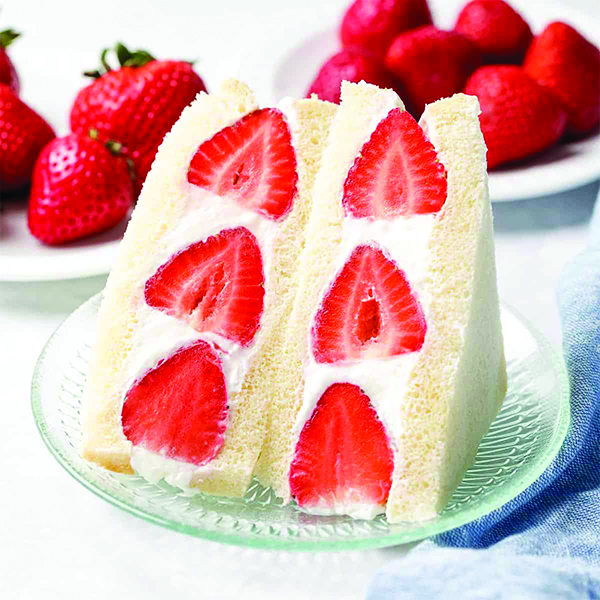

Strawberry Sando
For people who don’t know this treat. It’s called a Fruit Sando which is also known as a Japanese fruit sandwich. Now Sando is which is one of Japan’s popular snacks which offers for breakfast, lunch, and even snacks. Sandos are made from just simple ingredients like soft white bread filled with whipping cream and chunks of fresh seasonal fruit such as strawberries.
a Fruit Sando which is also known as a Japanese fruit sandwich. Now Sando is which is one of Japanese popular snacks which offers for breakfast, lunch, and even snacks. Sandos are made from simple ingredients like soft white bread filled with whipped cream and chunks of fresh seasonal fruit such as strawberries.
The Fruit Sando dates back to the 1920s, where they served it in Japanese coffee shops and cafés. They were served in a form of a classic sandwich which had thin slices of fruit inside. But it wasn’t until years later in the present day until today it was made popular again through social media. They say that the fruits within the sandwich are arranged in a form of artistical combinations and when split open can reveal a creative visual.
Ingredients
The list of ingredients to use for Strawberry Sando is
- A bag of bread
- A box of Strawberries
- An Electric Whisk (to mix)
- Sugar (white or brown optional)
- A plastic wrap
- And a carton of Heavy whipping cream
Instruction steps
The cooking procedure is very simple. The following starts with.....
- A large bowl and add 2 cups of heavy whipping cream
- Add 4 tablespoons of sugar
- Whisk and mix until it’s thick
- Get a slice of bread and cut the crust
- Add a layer of whipping cream
- Wash the strawberries and put in 5 strawberries
- Put the strawberries in a diagonal position
- Add another layer of whipping cream on top of Strawberries
- Topped it with another slice of bread
- Then wrapped the Sando in plastic wrap
- Place the Sando in the fridge for 30 minutes or an hour
- Then cut in half the Sando and enjoy eating